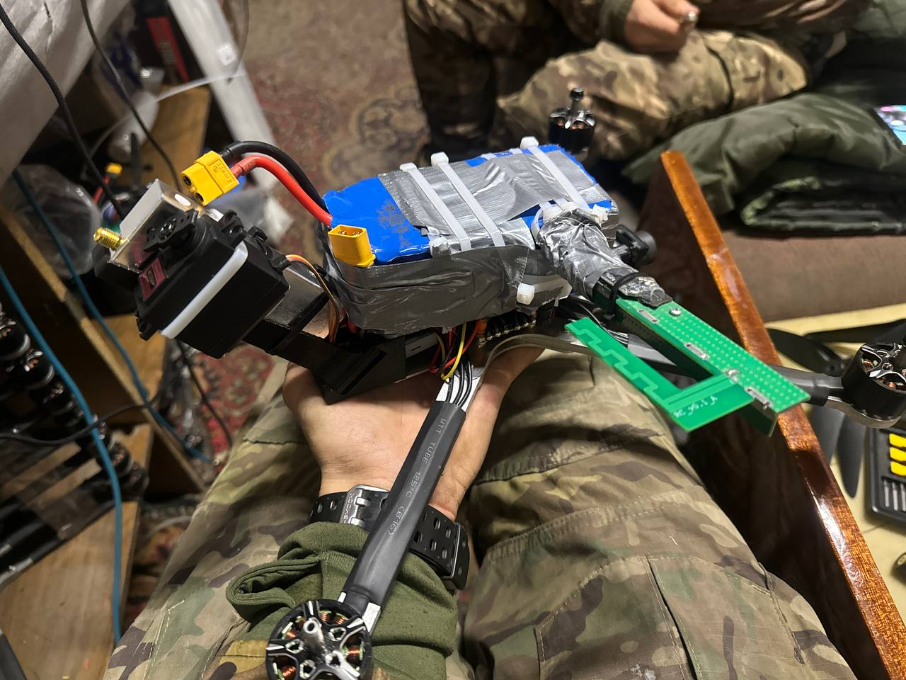

1_2~1.MP4_thumb.jpg)
Настройка механического переключения (с помощью сервопривода) видеоканалов на видеопередатчике 1,2 ГГц с пульта.
- Три провода от сервопривода паяем на полетник (
led - желтый, ground - черный, 5v - красный
).
- Подключаем дрон к компьютеру.
- В Betaflight Configurator, в разделе «Конфигурация» ставим галочки led_strip и servo_tilt (если таких галочек нет, надо перепрошить полетник с добавлением функции “Servos”).
- В командной строке пишем:
resource (тут смотрим какое значение стоит в строке “resource led_strip 1 XX” - где ХХ это ваше значение, запоминает ХХ)
resource led_strip 1 none
resource servo 1 XX (где ХХ - это ваше значение)
save
- Во вкладке «Сервоприводы» ставим на серво 1 нужный вам AUX (рекомендуем ставить на кнопку) галочку (например: для пульта RadioMaster TX12 кнопки – это AUX 5 и 6).
- Подключаем к дрону АКБ, если все сделано правильно серва дернется, и после коннекта с приемником можно по назначенной ранее кнопке двигать сервопривод.
⚠️ Сервы на 360 градусов не подходят.
- Нажимаем кнопку, выключаем дрон, серва остается в положении активной кнопки, подгоняем колено сервопривода под кнопку переключения каналов на видеопередатчике, фиксирует любым удобным вам способом и проверяем на работоспособность.
#РЕМОНТ_МАСТЕРСКАЯ
#FPV
#техник_fpv
#Механическая_настройка_для_fpv
#видео_fpv
Веб-страница создана автоматически на основе поста пользователя ПЛАТФОРМА_FPV